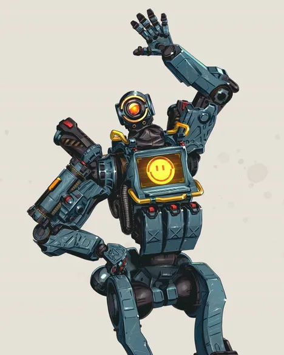
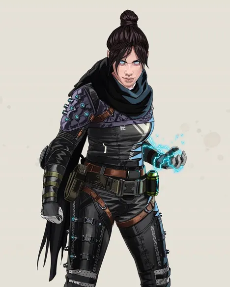
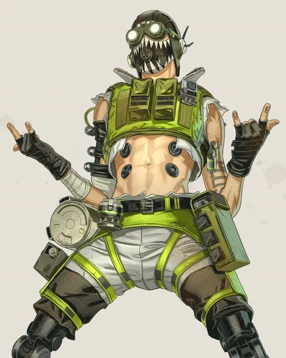
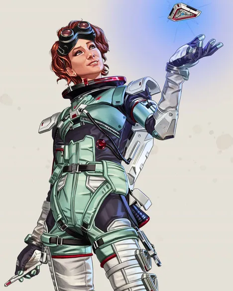
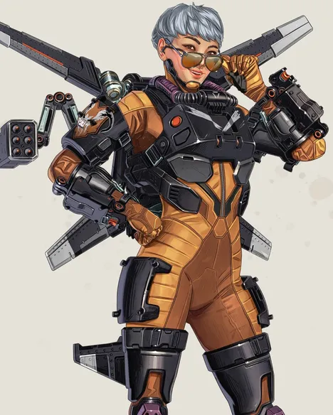
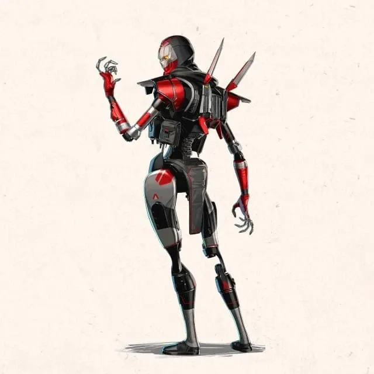

패스파인더(Pathfinder)
- 패시브-내부 정보(Insider Knowledge)
- 케어 패키지 내용물을 공개해 집라인 건을 완전히 충전하고 재사용 대기시간을 영구히 줄입니다.
- 전술-그래플링 훅(Grappling Hook)
- 접근하기 힘든 곳을 그래플로 빠르게 이동합니다.
- 얼티밋 스킬-짚라인 건(Zipline Gun)
- 모두가 사용할 수 있는 집라인을 만듭니다.

레이스(Wraith)
- 패시브-공허의 목소리(Voices from the Void)
- 위험이 다가올 때 목소리가 들립니다.
아무래도 이 목소리는 당신 편인 것 같습니다.
- 전술-공허 속으로(Into the Void)
- 안전한 '공허'에 들어가 모든 대미지를 피하고 빠르게 이동합니다.
- 얼티밋 스킬-차원 균열(Dimensional Rift)
- 45초 동안 2개의 지점을 포탈로 연결합니다.

옥테인(Octane)
- 패시브-빠른 치료(Swift Mend)
- 대미지를 받지 않을 때 옥테인은 지속적으로 체력이 회복됩니다.
- 전술-자극제(Stim)
- 6초 동안 이동 속도가 30%, 달리기 속도가 40% 증가합니다.
사용하면 생명력이 소모되며, 활성화 중에는 감속 효과를 더 적게 받습니다.
- 얼티밋 스킬-런치 패드(Launch Pad)
- 사용자를 공중으로 쏘아 올리는 설치형 점프 패드입니다.
사용자가 공중에서 [Space] 버튼을 눌러 더블 점프를 할 수 있습니다.

호라이즌(Horizon)
- 패시브-우주 유영(Spacewalk)
- 호라이즌의 커스텀 우주복으로 공중 제어력이 증가하며 낙하 충격이 감소합니다.
- 전술-중력 리프트 (Gravity Lift)
- 중력의 흐름을 뒤집어 플레이어를 공중에 띄우며 바깥쪽으로 발사시킵니다.
- 얼티밋 스킬-블랙홀(Black Hole)
- 뉴트를 배치해 초소형 블랙홀을 생성하여 적을 끌어당김니다.

발키리(Valkyrie)
- 패시브-VTOL 제트(VTOL Jets)
- 공중에서 [Space] 버튼을 누르면 제트팩을 사용합니다.
설정 메뉴에서 홀드 및 토글 설정을 변경할 수 있습니다.
- 전술-미사일 스웜(Missaile Swarm)
- 미니 로켓 스웜을 발사하여 적에게 대미지를 주고 혼란시킵니다.
- 얼티밋 스킬-스카이워드 다이브(Skyward Dive)
- 한 번 누르면 출격을 준비합니다. 팀원이 발키리와 상호작용하여 참가할 수 있습니다.
버튼을 다시 누르면 공중으로 날아오른 뒤 스카이 다이브로 전환합니다.

레버넌트(Revenant)
- 패시브-암살자의 본능(Assassin's Instinct)
- 근처에 보이는 체력이 낮은 상태의 적을 강조 표시합니다. 앉아서 걷는 속도가 증가하고 벽 오르기 능력이 향상됩니다.
- 전술-섀도우 파운스(Shadow Pounce)
- 전방을 맹렬하게 급습합니다. 홀드하여 충전하면 거리가 늘어납니다.
- 얼티밋 스킬-포지드 섀도우(Forged Shadows)
- 대미지를 막고 재생 가능한 강화된 그림자 장막을 전개합니다.
상대를 녹다운시키면 그림자가 복구되고, 즉시 전술을 사용할 수 있습니다.
